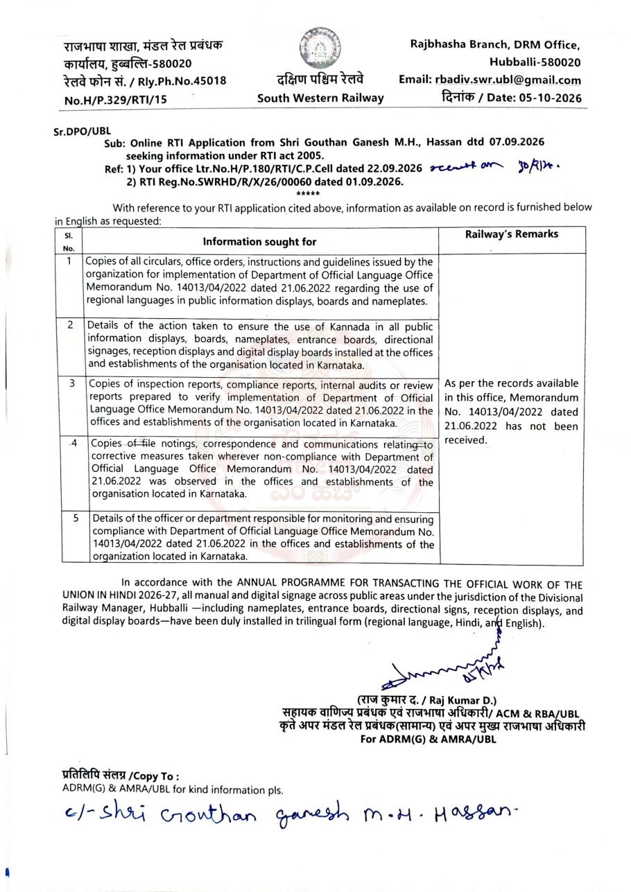

ಮುಖಪುಟ / ರೈಲ್ವೆ1 ನಿಮಿಷದ ಓದು
ಆದೇಶ ತಲುಪಿಲ್ಲ ಎಂಬ ಉತ್ತರ
ಕನ್ನಡ ಆದೇಶ "ನಮಗೆ ತಲುಪಿಯೇ ಇಲ್ಲ" ಎಂದ ಹುಬ್ಬಳ್ಳಿ ರೈಲ್ವೆ ವಿಭಾಗ
ಐದೂ ಪ್ರಶ್ನೆಗಳಿಗೆ ಒಂದೇ ವಾಕ್ಯದ ಉತ್ತರ: ಆದೇಶ "ತಲುಪಿಲ್ಲ". ಅದೇ ಪತ್ರ, OM ಅಲ್ಲ, ಹಿಂದಿಯ ವಾರ್ಷಿಕ ಕಾರ್ಯಕ್ರಮವನ್ನು ಉಲ್ಲೇಖಿಸಿ, ವಿಭಾಗದ ಎಲ್ಲ ಫಲಕಗಳು ಈಗಾಗಲೇ ಮೂರು ಭಾಷೆಗಳಲ್ಲಿವೆ ಎನ್ನುತ್ತದೆ.

ಸಾರ್ವಜನಿಕ ಪ್ರಾಧಿಕಾರನೈಋತ್ಯ ರೈಲ್ವೆ, ಹುಬ್ಬಳ್ಳಿ ವಿಭಾಗ
ನೋಂದಣಿ ಸಂಖ್ಯೆ
SWRHD/R/T/26/00336ಸಲ್ಲಿಕೆ07.09.2026
ಉತ್ತರ06.10.2026 29ನೇ ದಿನ
ಮೂಲಕಆರ್ಟಿಐ ಆನ್ಲೈನ್ ಪೋರ್ಟಲ್
ಕೇಳಿದ್ದು ಏನು, ಬಂದ ಉತ್ತರ ಏನು
| 1OM ಅಡಿ ಹೊರಡಿಸಿದ ಸುತ್ತೋಲೆಗಳು | "ಈ ಕಚೇರಿಯಲ್ಲಿ ಲಭ್ಯವಿರುವ ದಾಖಲೆಗಳ ಪ್ರಕಾರ, 21.06.2022ರ ಜ್ಞಾಪನ ಸಂಖ್ಯೆ 14013/04/2022 ತಲುಪಿಲ್ಲ" |
|---|---|
| 2ಕನ್ನಡ ಬಳಕೆಗೆ ಕೈಗೊಂಡ ಕ್ರಮ | ಅದೇ ಉತ್ತರ (ಐದೂ ಪ್ರಶ್ನೆಗಳಿಗೆ ಒಂದೇ ಕೋಶ) |
| 3ತಪಾಸಣೆ / ಅನುಸರಣಾ ವರದಿಗಳು | ಅದೇ ಉತ್ತರ (ಐದೂ ಪ್ರಶ್ನೆಗಳಿಗೆ ಒಂದೇ ಕೋಶ) |
| 4ಅನುಸರಣೆ ಇಲ್ಲದೆಡೆ ಸರಿಪಡಿಸುವ ಕ್ರಮ | ಅದೇ ಉತ್ತರ (ಐದೂ ಪ್ರಶ್ನೆಗಳಿಗೆ ಒಂದೇ ಕೋಶ) |
| 5ಮೇಲ್ವಿಚಾರಣೆಯ ಹೊಣೆ ಹೊತ್ತ ಅಧಿಕಾರಿ | ಅದೇ ಉತ್ತರ (ಐದೂ ಪ್ರಶ್ನೆಗಳಿಗೆ ಒಂದೇ ಕೋಶ) |
ಇದೇಕೆ ಮುಖ್ಯ
ಆದೇಶ ತಮಗೆ ತಲುಪಿಯೇ ಇಲ್ಲ ಎನ್ನುವ ವಿಭಾಗ, ಅದೇ ಪತ್ರದಲ್ಲಿ ಹುಬ್ಬಳ್ಳಿ ಮಂಡಲ ರೈಲ್ವೆ ವ್ಯವಸ್ಥಾಪಕರ ವ್ಯಾಪ್ತಿಯ ನಾಮಫಲಕದಿಂದ ಡಿಜಿಟಲ್ ಫಲಕದವರೆಗಿನ ಎಲ್ಲ ಫಲಕಗಳು ಈಗಾಗಲೇ ಮೂರು ಭಾಷೆಗಳಲ್ಲಿವೆ (ಪ್ರಾದೇಶಿಕ ಭಾಷೆ, ಹಿಂದಿ, ಇಂಗ್ಲಿಷ್) ಎನ್ನುತ್ತದೆ. ಈ ಹೇಳಿಕೆ OM ಅನ್ನು ಅಲ್ಲ, 2026-27ರ ಹಿಂದಿ ವಾರ್ಷಿಕ ಕಾರ್ಯಕ್ರಮವನ್ನು ಉಲ್ಲೇಖಿಸುತ್ತದೆ; ಅದಕ್ಕೆ ಯಾವುದೇ ಫೋಟೋ, ತಪಾಸಣಾ ವರದಿ ಅಥವಾ ಸ್ಥಳಗಳ ಪಟ್ಟಿ ಇಲ್ಲ.
